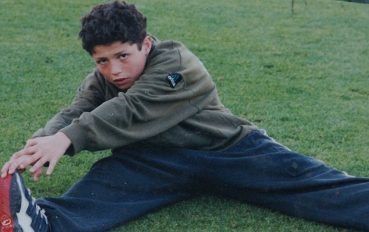

História de Cristiano Ronaldo
Cristiano Ronaldo (1985) é um futebolista português que fez história no Real Madrid. É jogador do Al-Nassr e da Seleção Portuguesa. Foi eleito o melhor jogador do mundo em 2008, 2013, 2014, 2016 e 2017. Recebeu cinco bolas de ouro em sua carreira.
Infância
Cristiano Ronaldo dos Santos Aveiro nasceu na cidade de Funchal, na Ilha da Madeira, Portugal, no dia 05 de fevereiro de 1985. Filho caçula do jardineiro José Diniz Pereira Aveiro e da cozinheira Maria Dolores dos Santos Aveiro, quando criança passava a maior parte de seu dia jogando bola na rua com os amigos.
Início de Carreira
Cristiano Ronaldo começou sua carreira aos 9 anos de idade quando estreou no Futebol Clube Andorinha, na Ilha da Madeira. Com grandes habilidades logo despertou o interesse do maior clube da ilha, o Nacional, que o contratou em 1995.
Sporting Lisboa
No dia 14 de abril de 1997, Cristiano Ronaldo fez o teste no Sporting Lisboa e, com apenas 11 anos entrou para as categorias de base do clube, onde jogou no Sub 16, Sub 17 e no Sub 18.
No dia 13 de julho de 2002, Ronaldo entrou como titular na equipe principal do Sporting. Desse dia em diante disputou mais de 30 partidas com a equipe e marcou 5 gols.
Manchester United
Em 2003, Cristiano Ronaldo chamou a atenção do técnico do Manchester United, da Inglaterra. Foi contratado para substituir o jogador David Beckham, que havia sido contratado pelo Real Madrid, da Espanha.
No Manchester, Ronaldo conquistou vários campeonatos e começou a mostrar seu estilo.
Real Madrid
Em 2008, depois de muitas especulações, Cristiano Ronaldo foi para o Real Madrid, e participou da temporada 2009-2010. Sua contratação foi a mais cara do clube, que tinha outros jogadores de destaque mundial como Kaká, Zidane, Ronaldo e Roberto Carlos, que fizeram parte da primeira fase das grandes estrelas do time espanhol, que ficaram conhecidos como os Intergalácticos. Ronaldo jogou no Real Madrid entre 2009 e 2018 e pelo clube, venceu dois Campeonatos Espanhóis e quatro Champions Leagues e marcou 450 gols pelo clube merengue em 438 jogos.
Ele também se tornou o maior artilheiro na história do clube.
Alguns gols do CR7 pelo Real Madrid na Champios League.
Juventus
O português chegou no time para a temporada 2018/19. Naquela época ele conquistou o título da Serie A mantendo uma marca significativa de oito títulos seguidos. Mas na Champions League, o time italiano caiu para o Ajax nas quartas de final. Vale lembrar que nas oitavas Cristiano marcou um hat-trick contra o Atlético de Madrid, que teria vencido o primeiro jogo por 2 a 0, o que acabou classificando à Juve para outra fase.
O cinco vezes Bola de Ouro deixa a Juventus com cinco títulos, mas nenhum deles da Champions League. Ele marcou 101 gols e distribuiu 22 assistências, em 134 jogos.
Manchester United Pela Segunda vez
Cristiano Ronaldo com 37 anos, voltou ao Manchester United na temporada 2021/2022 depois de ter atuado no clube entre 2003 e 2009
Cristiano deixa o United com 145 gols em 346 partidas e diversos títulos conquistados, incluindo a Liga dos Campeões e o Mundial de Clubes de 2008 e três campeonatos ingleses.
Seleção de Portugal
Cristiano é o maior artilheiro da história da seleção portuguesa e de qualquer seleção, com 122 gols em 198 partidas. Os números o fizeram ultrapassar o lendário Ferenc Puskás, que jogou por Hungria e Espanha e o iraniano Ali Daei, que tem 109 gols.